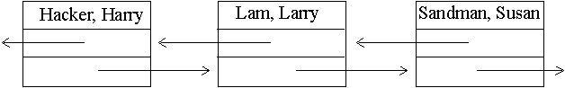
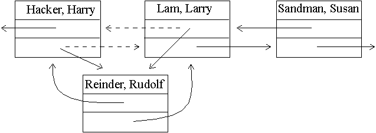
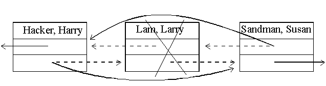

19. Въведение в структурите от данни
I think a better way of approaching C++ is to use
some of the standard library facilities.
Bjarne Stroustrup
 Свързани списъци.
Свързани списъци.
Всяка стойност се съхранява в отделен блок от паметта,
заедно с местоположението на съседните блокове в последователността. Този
начин на съхранение позволява лесно да се вмъкне или отстрани елемент,
без да се местят другите елементи. Както знаем, това е невъзможно, ако
се използва вектор (вж 12. Вектори). В стандартната библиотека
шаблони (STL) на С++ има реализация на линейната структура свързан списък
- шаблонът list. Във всеки
елемент на свързания списък се съхранява данна и две връзки - съм следващия
елемент ат списъка и към предишнея елемент от списъка.

Вмъкването и изтриването на елемент от свързания списък става лесно
- променят се стойностите на няколко връзки.


// list1.cpp
#include <iostream>
#include <string>
#include <list>
using namespace std;
int main()
{ list<string> staff;
/* шаблон за списък */
staff.push_back("Cracker,
Carl");
staff.push_back("Hacker,
Harry");
staff.push_back("Lam, Larry");
staff.push_back("Sandman,
Susan");
list<string>::iterator
pos; /*
итератор на списък */
/* добавя елемент на четвърто място */
pos = staff.begin();
pos++;
pos++;
pos++;
staff.insert(pos, "Reindeer,
Rudolf");
/* отстранява втория елемент */
pos = staff.begin();
pos++;
staff.erase(pos);
/* добавя елемент на последно място */
pos = staff.end();
staff.insert(pos, "Zeider,
Zeev");
/* обхождане на списък */
for (pos = staff.begin();
pos != staff.end(); pos++)
cout <<
*pos << "\n"; /*
извежда съдържание на текущата позиция */
return 0;
}
Cracker, Carl
Lam, Larry
Reindeer, Rudolf
Sandman, Susan
Zeider, Zeev
|
Указатели и динамична
памет.
** Дялове в оперативната памет при изпълнение на програма на С++.
CODE
транслираната програма
(от exe файла) |
DATA
глобални данни |
STACK
локални променливи и константи
имена на извикани функции |
| Динамична памет |
** Тип указател - съхранява адрес от оперативната памет на компютъра.
- дефиниране на променлива тип указател:
синтаксис: име на тип * име на
променлива
Employee *boss;
int *pn;
- запазване на място в динамичната памет - унарна операция new:
синтаксис:
new име на тип
-
запазва място за една променлива от зададения тип
new име на тип(стойност)-
запазва място за една променлива от зададения тип и я инициалира със зададената
стойност
new име на тип[число]-
запазва място за няколко променливи (колкото е числото) от зададения тип.
- дефиниране на променлива тип указател и задаване на начална стойност
на указателя:
int *pn = new int;
int *arr = new int[100];
- дефиниране на променлива тип указател (boss),
задаване на начална стойност на указателя (операция new)
и задаване на начална стойност на сочения от него обект:
Employee *boss = new Employ("John", 3200);
int *pn = new int(10);
STACK
| Име: |
boss |
| Тип: |
Employee* (указател)
|
| Стойност: |
адрес XXX |
| Име: |
pn |
| Тип: |
int* (указател)
|
| Стойност: |
адрес YYY |
|
Динамична памет
адрес XXX
| Име: |
*boss (временно!)
|
| Тип: |
Employee |
| Стойност: |
|
адрес YYY
| Име: |
*pn (временно!)
|
| Тип: |
int |
| Стойност: |
10 |
|
- стойност на указател - унарна операция *:
синтаксис: *указател
Employee harry("Harry", 1500);
*boss = harry;
*pn = 12;
cout << *pn;
- операция стрелка ->:
синтаксис: указател към клас ->
член на класа
cout << (*boss).get_salary();
cout << boss->get_salary();
- освобождаване на памет (унищожаване на обекта) - операция delete.
синтаксис: delete указател
delete boss;
delete pn;
- невалидни указатели.
int *pk = new int(10);
cout << *pk;
delete pk;
*pk = 100; /* невалиден указател */
Опасна грешка! Опит за работа със стойност на
указател след освобождаване на заетата памет.
- операция адрес на променлива &.
синтаксис: & име на променлива
int k = 10;
int *pk = &k;
cout << k;
cout << (*pk);
|
STACK
Адрес XXX
| Име: |
k |
| Тип: |
int |
| Стойност: |
10 |
|
STACK
| Име: |
pk |
| Тип: |
int* (указател)
|
| Стойност: |
Адрес XXX
|
|
- променливи-псевдоними.
int k = 10;
int &ak = k; /* дефиниране на променлива-псевдоним
*/
if ( ak == k ) cout << "YES, of
course";
** Указатели и масиви, адресна аритметика.
Името на масив е константен указател.
int a[3] = {10, 20, 30};
int *pa = a;
/* отпечатва 3 пъти стойността на a[0]
*/
cout << a[0] <<" "<<
pa[0] <<" "<< *pa;
/* отпечатва 4 пъти стойността на a[1]
*/
cout << a[1] <<" "<<
pa[1] <<" "<< *(pa+1) <<" "<<(pa+1)[0];
| Адрес |
pa или a |
pa+1 или a+1 |
pa+2 или a+2 |
| Стойност |
10 |
20 |
30 |
| Индекс |
0 |
1 |
2 |
| Достъп 1 |
a[0] |
a[1] |
a[2] |
| Достъп 2 |
*pa |
*(pa+1) |
*(pa+2) |
| Достъп 3 |
pa[0] |
(pa+1)[0] |
(pa+1)[1] |
| Достъп 4 |
*a |
*(a+1) |
*(a+2) |